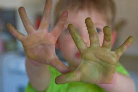

Adoptez le stylo adapté à vous
Vous en avez marre d'écrire mal, d'avoir mal aux doigts, de faire des bavures, vous êtes au bon endroit!
Je me teste
Pourquoi est-il important de bien choisir son stylo?
Pour avoir une meilleure tenue, ce qui améliorera votre calligraphie

Parce qu'un stylo de gaucher ou de droitier ce n'est pas la même chose
Parce que votre stylo va dépendre de ce que vous faites avec
powered by
Typeform